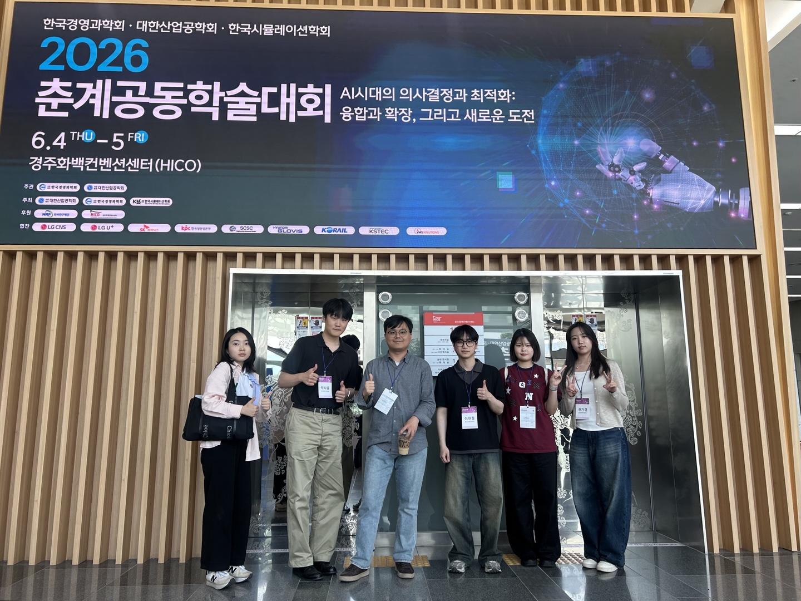
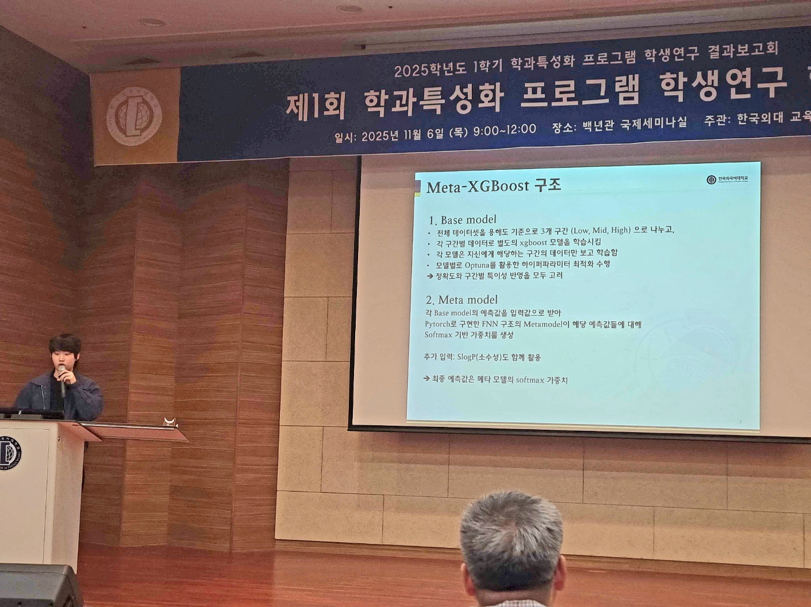

Financial Engineering Lab.
금융공학연구실 · Division of Finance & AI, Hankuk University of Foreign Studies
Blog
Photos and short notes from lab life: conferences, seminars, gatherings, and small milestones.
Conference trips
Drag to turn the globe. Click a route, or a trip above, to see photos from it.
Year
Category

Lab website goes live
연구실 홈페이지 오픈
연구실 홈페이지를 열었습니다. 블로그 페이지에는 학회 참석, 내부 행사 등 연구실 소식을 사진과 함께 올릴 예정입니다.
YonginDetails →

2026 춘계공동학술대회 참가
2026 KIIE/KORMS Spring Joint Conference
한국경영과학회, 대한산업공학회, 한국시뮬레이션학회가 공동 주최한 2026 춘계공동학술대회에 참가했습니다. 금융 인공지능 특별 세션에서 학부연구생 박사홍이 구두 발표를 했습니다.
경주 화백컨벤션센터 (HICO)Details →
AAAI-26 견학
The 40th AAAI Conference on Artificial Intelligence, Singapore
2026년 1월 20일부터 27일까지 싱가포르 EXPO에서 열린 제40회 AAAI Conference on Artificial Intelligence(AAAI-26)를 견학했습니다.
Singapore EXPODetails →
ICAIF 2025 견학
The 6th ACM International Conference on AI in Finance, Singapore
2025년 11월 15일부터 18일까지 싱가포르에서 열린 제6회 ACM International Conference on AI in Finance(ICAIF '25)를 견학했습니다.
Sheraton Towers SingaporeDetails →

구현모 학부연구생, 학과특성화 프로그램 학생연구 최우수상
Top Prize at the HUFS Student Research Program
구현모 학부연구생이 제1회 학과특성화 프로그램 학생연구 결과보고회에서 인문사회계열(비언어) 최우수상을 받았습니다. 분자 용해도 예측을 위한 Meta-XGBoost 모델을 발표했습니다.
한국외대 백년관 국제세미나실Details →
No posts match this filter.